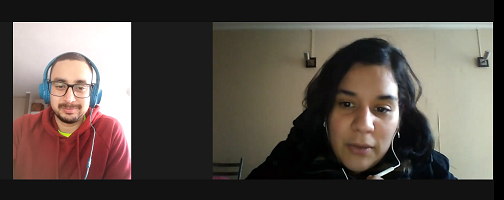
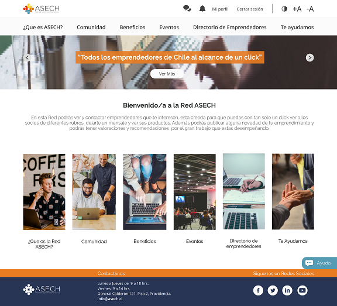
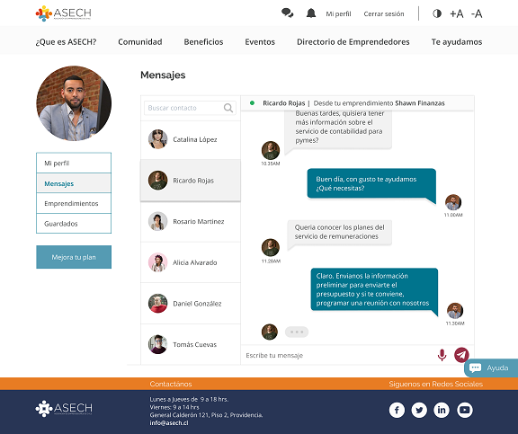

Este proyecto tuvo como desafío mejorar la experiencia de los emprendedores en el momento que ellos quieran buscar más socios, convertir la Red en un networking eficiente y dinámico que permita a los socios crear lazos, fraternizar e impulsar sus negocios. La Red ASECH surge como una canal de comunicación creado solo para socios, es una herramienta que permite la búsqueda de emprendedores aplicando diferentes filtros como por ejemplo : buscar emprendedores por rubro, por región, por palabra clave y por nombre de la empresa.

La renovación de esta red se realizó a partir de los requerimientos del cliente, la data disponible y las necesidades de los usuarios identificadas durante la investigación. Se realizaron entrevistas a los usuarios de la Red y los posibles usuarios junto con un testeo donde los entrevistados evaluaban la red actual de la ASECH. Esto con la finalidad de saber cuáles son los puntos de oportunidades que tenía el equipo de UX y donde podríamos aplicar las posibles mejoras.
Se realizó un proceso de investigación muy detallado, se analizaron paginas de referentes y competencias, además se definieron los user personas para representar a los usuarios de esta red y ofrecer soluciones más adecuadas a sus necesidades, junto con un journey map de los mismo y así analizar el viaje que tienen los usuarios al navegar está Red, definiendo donde y cuales son los puntos de dolor de estos usuarios.

En la etapa de prototipado, hicimos el wireframe y aquí, testeamos varios elementos, donde se realizó diferentes tipos de testeo como el A-B testing, este fue usado para comparar las dos versiones de cómo presentar la ficha de la empresas y los sistemas de filtrado que tendrían, esto con la finalidad de tener métricas de cual seria las versiones más eficientes y adaptadas a los usuarios.

Después de todo el proceso de investigación, propuestas de diseño, testeos e iteraciones, se obtuvo un diseño actual y moderno, siguiendo las gama de colores institucional, tomando en cuenta la accesibilidad.
Además concluimos que los emprendedores socios de la Asech necesitan un espacio donde generar contactos confiables, para eso necesitan acceder a una plataforma que le entregue las herramientas de búsqueda. Encontrar y comunicarse con otros emprendedores donde se genere redes y se potencie los negocios entre socios es el principal objetivo de la herramienta, por tanto en nuestro prototipo de la nueva Red ASECH, aplicamos según las necesidades de los emprendedores un diseño que le permite a los socios crear una networking eficiente y personalizado, generando un espacio privado para que el usuario se sienta cómodo desde el primer momento que ingresa a la Red y así pueda generar, recibir, compartir y guardar información útil.
